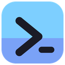
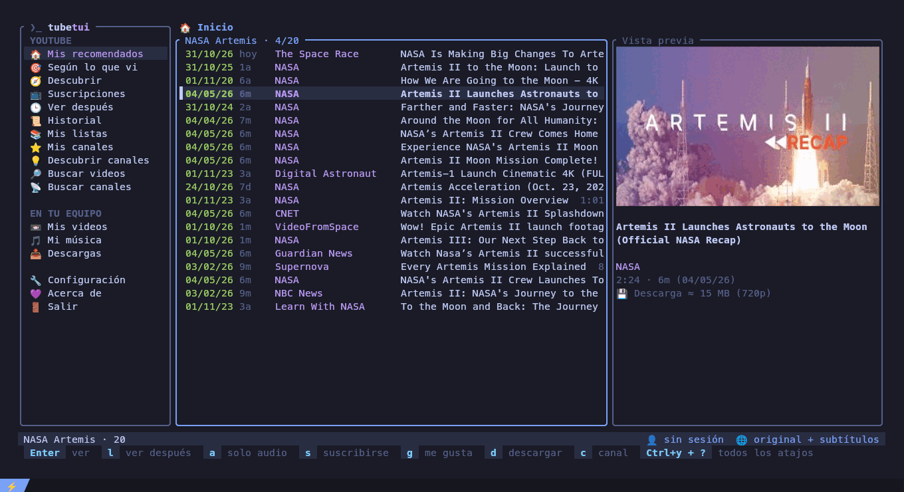

tubetuiYouTube, tus suscripciones y tus videos y música locales, en la terminal. Pestañas, Ver después, búsqueda instantánea y video integrado en kitty. YouTube, your subscriptions and your local videos and music, in the terminal. Tabs, watch later, instant search and video embedded in kitty.
Gratis y de código abierto · AGPL-3.0 · Linux, Windows y macOS Free and open source · AGPL-3.0 · Linux, Windows and macOS

# DescargasDownload
Siempre la última versión. Todas necesitan mpv y yt-dlp (el instalador de Windows los instala por vos). Always the latest version. All of them need mpv and yt-dlp (the Windows installer installs them for you).
🪟 Windows tu sistemayour system
Windows 10 y 11, 64 bits. Se usa desde Windows Terminal.Windows 10 and 11, 64-bit. Use it from Windows Terminal.
tubetui-setup.exeinstaladorinstaller tubetui.zipportableportable🐧 Linux tu sistemayour system
x86_64. Con kitty el video se ve dentro de la app.x86_64. In kitty the video plays inside the app.
tubetui_amd64.debDebian · Ubuntu · Mint tubetui-linux.tar.gzcualquier distroany distro🍎 macOS tu sistemayour system
Apple Silicon (M1 en adelante).Apple Silicon (M1 and later).
tubetui-macos.tar.gzarm64 cargo install tubetuiIntel y el restoIntel and the restTodas las versiones y sus notas: Every version and its notes: GitHub Releases · crates.io
# FuncionesFeatures
Todo YouTube desde el teclado (o el mouse), sin abrir el navegador.All of YouTube from the keyboard (or the mouse), without opening the browser.
Inicio y suscripcionesHome and subscriptions
Tu feed, lo nuevo de tus canales, Descubrir (sin los canales que ya seguís) y Mis canales con su descripción. Los Shorts quedan afuera.Your feed, what's new on your channels, Discover (without the ones you follow) and My channels with their description. Shorts are left out.
Búsqueda en un segundoSearch in a second
20 resultados y 20 más al bajar, con vista previa, portada, duración y peso. En todo YouTube, en tus canales o dentro de uno.20 results and 20 more as you scroll, with a preview, thumbnail, length and size. All of YouTube, your channels or inside one.
Video a tu maneraVideo your way
Integrado en kitty, en una ventana de mpv o superpuesto sobre la app (X11, con la placa de video). Calidad y compresión cambian al vuelo.Embedded in kitty, in an mpv window or laid over the app (X11, GPU decoding). Quality and codec change on the fly.
PestañasTabs
Un video por pestaña, el audio sigue mientras buscás otra cosa. En ventana aparte, la pestaña muestra la ficha y "A continuación".One video per tab, audio keeps playing while you browse. With a separate window, the tab shows the details and "Up next".
Ver después y descargasWatch later and downloads
Guardá videos con l, suscribite con s, descargá con subtítulos con d y seguí el progreso en Descargas.Save videos with l, subscribe with s, download with subtitles with d and follow the progress in Downloads.
Historial y seguir donde lo dejasteHistory and resume
Todo lo que viste, con el día: en tubetui y, con sesión, también en YouTube (navegador, celular). Al reabrir un video arranca en el segundo donde lo cerraste.Everything you watched, with the day: in tubetui and, logged in, on YouTube too (browser, phone). Opening a video again starts where you closed it.
Según lo que viFrom what I watched
El "A continuación" de tus últimos 10 videos, todo junto y sin los que ya viste.The "Up next" of your last 10 videos, all together and without the ones you saw.
Tus canales favoritos primeroYour favorite channels first
Los canales que más mirás van arriba en Suscripciones y Mis canales, y los avisos los nombran primero.The channels you watch most go first in Subscriptions and My channels, and notices name them first.
Mis listasMy playlists
Tus playlists de YouTube, "Videos que me gustan" y "Ver más tarde", a un Enter. Con x borrás una.Your YouTube playlists, "Liked videos" and "Watch later", one Enter away. x deletes one.
Capítulos y SponsorBlockChapters and SponsorBlock
Saltá de capítulo con [ ]. Los patrocinios y pedidos de suscripción se saltean solos.Jump chapters with [ ]. Sponsors and "subscribe!" reminders are skipped by themselves.
Solo audioAudio only
Con a escuchás un video como música, y volvés al video en el mismo segundo.With a you listen to a video like music, and go back to the video at the same second.
ComentariosComments
Los comentarios del video al lado de "A continuación", con PgUp PgDn.The video's comments next to "Up next", with PgUp PgDn.
Icono y bandeja del sistemaIcon and system tray
Icono propio en la ventana y en la bandeja (X11). Con un click: mostrar la terminal, pausar, ir a una sección, configuración o salir.Its own icon on the window and in the tray (X11). One click: show the terminal, pause, open a section, settings or quit.
Avisos de videos nuevosNew video notices
Cada 15 minutos mira tus suscripciones y te avisa en la app y en el escritorio.Every 15 minutes it checks your subscriptions and tells you, in the app and on the desktop.
Subtítulos y doblajeSubtitles and dubbing
Original, subtítulos o audio doblado, en el idioma que elijas, sin cortar el video.Original, subtitles or dubbed audio, in the language you choose, without stopping the video.
Tu sesión, sin contraseñasYour login, no passwords
Toma la sesión de tu navegador (Brave, Chrome, Firefox, Edge… también snap y flatpak) o de un cookies.txt.Uses your browser's login (Brave, Chrome, Firefox, Edge… snap and flatpak too) or a cookies.txt.
Tus archivosYour files
Tus videos y tu música locales, con cola de reproducción. Marcá varios y mandalos a la papelera.Your local videos and music, with a play queue. Mark several and send them to the trash.
Liviana y lindaLight and pretty
25 MB de memoria, arranca al instante. Logo al abrir, animaciones, íconos y mouse (clic derecho: menú de opciones), todo configurable. Español e inglés.25 MB of memory, starts instantly. Opening logo, animations, icons and mouse (right click: options menu), all configurable. Spanish and English.
# InstalarInstall
Elegí tu sistema.Pick your system.
Bajá y ejecutá tubetui-setup.exe: instala para tu usuario (sin administrador), agrega tubetui al menú Inicio y al PATH, y con la casilla marcada instala mpv y yt-dlp. A mano: Download and run tubetui-setup.exe: it installs for your user (no administrator), adds tubetui to the Start menu and the PATH and, with its box ticked, installs mpv and yt-dlp. By hand:
winget install --id mpv-player.mpv-CI.MSVC -e
winget install --id yt-dlp.yt-dlp -e
tubetuiEn Windows el video se abre en una ventana de mpv. Para la sesión de YouTube conviene Firefox: Chrome y Edge cifran sus cookies de una forma que yt-dlp no siempre puede leer.On Windows the video opens in an mpv window. For the YouTube login prefer Firefox: Chrome and Edge encrypt their cookies in a way yt-dlp cannot always read.
# mpv viene como dependencia; yt-dlp mejor actualizado con pipx
wget https://github.com/polblancoo/tubetui/releases/latest/download/tubetui_amd64.deb
sudo apt install ./tubetui_amd64.deb
pipx install yt-dlp
tubetuicurl -L https://github.com/polblancoo/tubetui/releases/latest/download/tubetui-x86_64-linux.tar.gz | tar xz
install -Dm755 tubetui/tubetui ~/.local/bin/tubetui
# y mpv + yt-dlp con tu gestor de paquetes, por ejemplo:
sudo pacman -S mpv yt-dlp # Arch
sudo dnf install mpv yt-dlp # Fedorabrew install mpv yt-dlp
curl -L https://github.com/polblancoo/tubetui/releases/latest/download/tubetui-aarch64-macos.tar.gz | tar xz
install -m755 tubetui/tubetui /usr/local/bin/tubetui
# la primera vez, si macOS lo bloquea:
xattr -d com.apple.quarantine /usr/local/bin/tubetui# cualquier sistema con Rust (rustup.rs)
cargo install tubetuiPara ver el video dentro de la app usá kitty. En cualquier otra terminal se abre en una ventana.To watch the video inside the app use kitty. In any other terminal it opens in a window.
# AtajosKeys
La línea de abajo de la app siempre muestra las teclas que sirven en ese momento; Ctrl+y ? las muestra todas.The app's bottom line always shows the keys that work right now; Ctrl+y ? shows them all.
ListasLists
| ↑↓ jk | moversemove |
| Enter | ver · abrir canalplay · open channel |
| / | buscarsearch |
| l s d c | Ver después · suscribirse · descargar · canalwatch later · subscribe · download · channel |
| a | ver como solo audioplay as audio only |
| espacio x o | tus archivos: marcar · a la papelera · ordenaryour files: mark · to the trash · sort |
| x | Historial: quitar · Descargas: cancelar · Mis listas: borrarHistory: remove · Downloads: cancel · My playlists: delete |
| Esc | volverback |
| clic der. | menú con las opciones de lo que está debajomenu with the options of what is under it |
Mirando un videoWatching
| espacio | pausapause |
| ←→ ↑↓ | ±5 s · volumen±5 s · volume |
| v b | calidad · compresiónquality · codec |
| j i o | subtítulos · original/doblado · idiomasubtitles · original/dubbed · language |
| f Tab | pantalla completa · A continuaciónfullscreen · Up next |
| [ ] a | capítulo anterior · siguiente · solo audioprevious · next chapter · audio only |
| PgUp PgDn | comentarioscomments |
Siempre: Ctrl+y y una teclaAnywhere: Ctrl+y, then a key
| n p 0-9 | pestañastabs |
| x | cerrar la pestañaclose the tab |
| b m | mostrar el menú · ir al menúshow the menu · go to it |
| l | español ⇄ English |
| ? q | ayuda · salirhelp · quit |
# DocumentaciónDocumentation
Todo lo que la app puede hacer y cómo configurarla.Everything the app does and how to set it up.
# Apoyar el proyectoSupport the project
tubetui es gratis. Si te sirve, una estrella en GitHub ayuda; y si querés, una donación:tubetui is free. If you find it useful, a star on GitHub helps; and if you like, a donation:
G5PVFgymo47BE3SoxzB9RvTp2ZR8z6tkXLL8hPFJu1Gm0xf0666bcA8F1b1f910E47D0f8e61185EB0E343a220xf0666bcA8F1b1f910E47D0f8e61185EB0E343a22